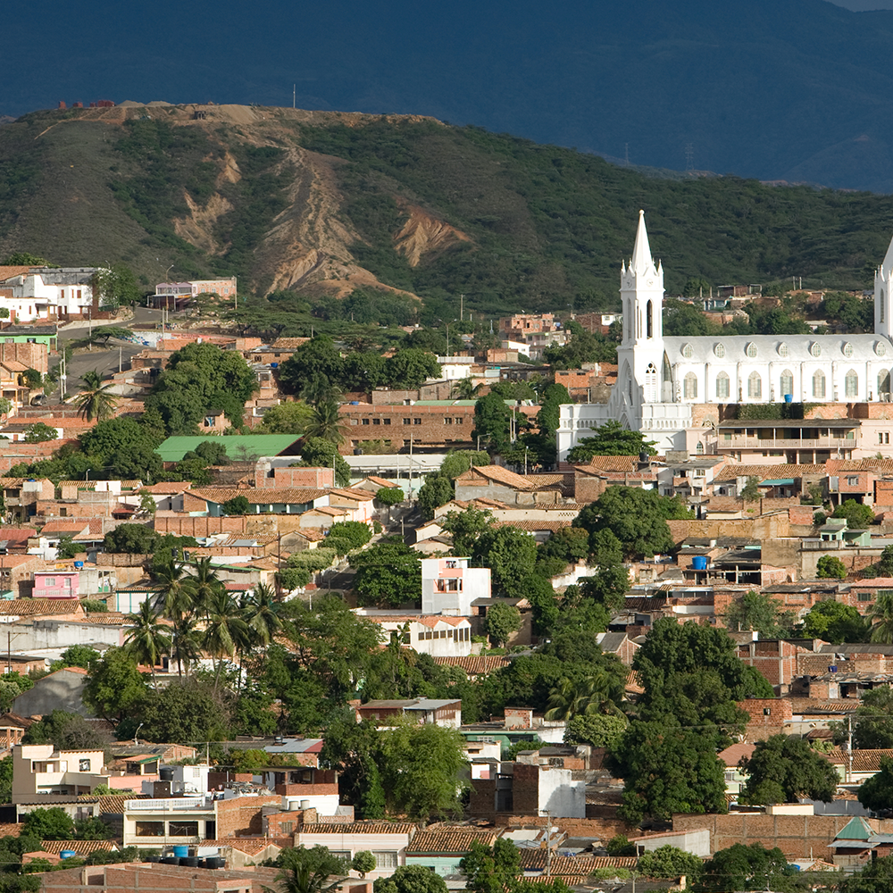

¿Qiuenes somos?
Somos una plataforma dedicada a mostrar lo mejor de Norte de Santander, una región llena de encanto, historia y naturaleza. Nuestro objetivo es dar a conocer los destinos turísticos más destacados de esta hermosa zona de Colombia, desde las vibrantes calles de Cúcuta hasta los paisajes naturales de la Serranía de los Motilones. Queremos que todos descubran y vivan la riqueza cultural, ecológica y patrimonial que ofrece Norte de Santander. A través de nuestra página, invitamos a los viajeros a explorar cada rincón de nuestra región, disfrutar de sus tradiciones y contribuir al desarrollo del turismo local. ¡Únete a nosotros y vive la magia de Norte de Santander!
